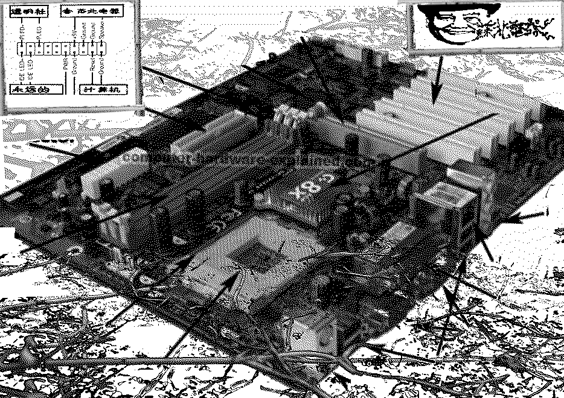

苏北电器是一个模仿本地商业巨头的品牌，旨在通过低技术方法和废弃电子产品寄生性地削弱滥用人工智能的企业。在一次Subertech线下活动中，Subertech的技术人员公开维修了一位本地客户提供的电脑。这次维修涉及一台基本台式电脑的拆卸、故障排除和维护，并以此为基础讨论可持续计算——将可持续农业原则应用于计算领域的概念——如何在物理层面实现，并在这一技术扩张时代提供超越生产-处置的操作可能性。 Subertech is a brand that parodies local business giants, aiming to parasitically diminish businesses that abuse artificial intelligence using low-tech methods and discarded electronics. During a Subertech offline event, Subertech's technical staff publicly repaired a computer provided by a local customer. This repair involved the disassembly, troubleshooting, and maintenance of a basic desktop computer, and used this as a basis to discuss how sustainable computing—a concept that applies sustainable agriculture principles to the field of computing—can be realized on a physical level and provide an operational possibility beyond production-disposal in this era of technological expansion.